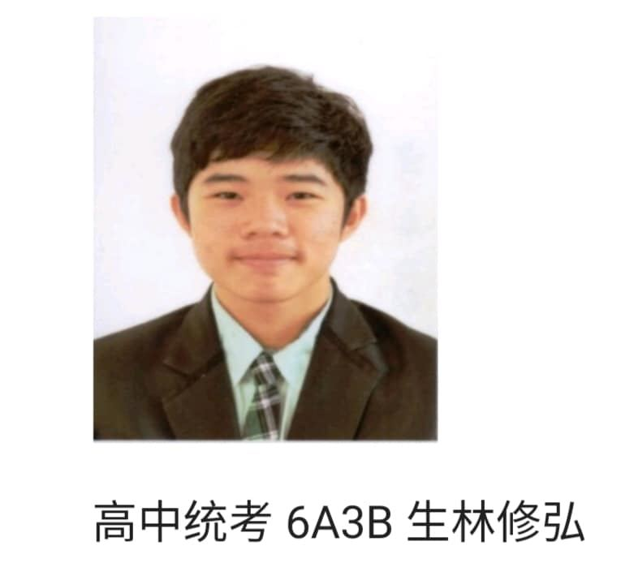
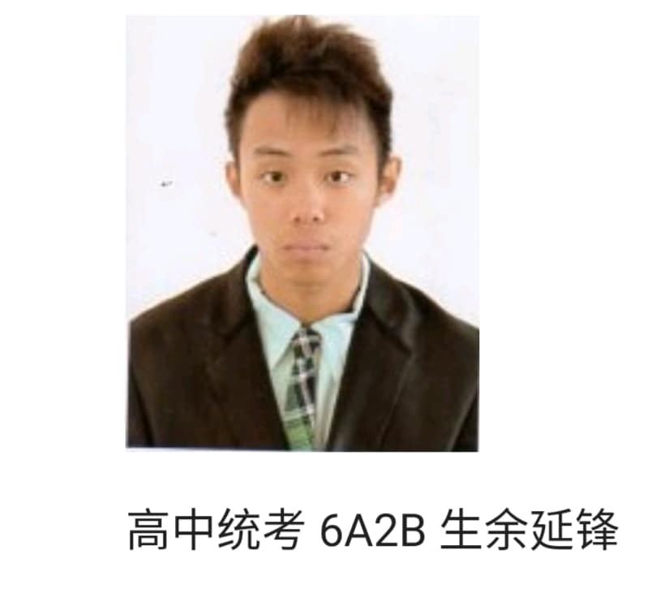
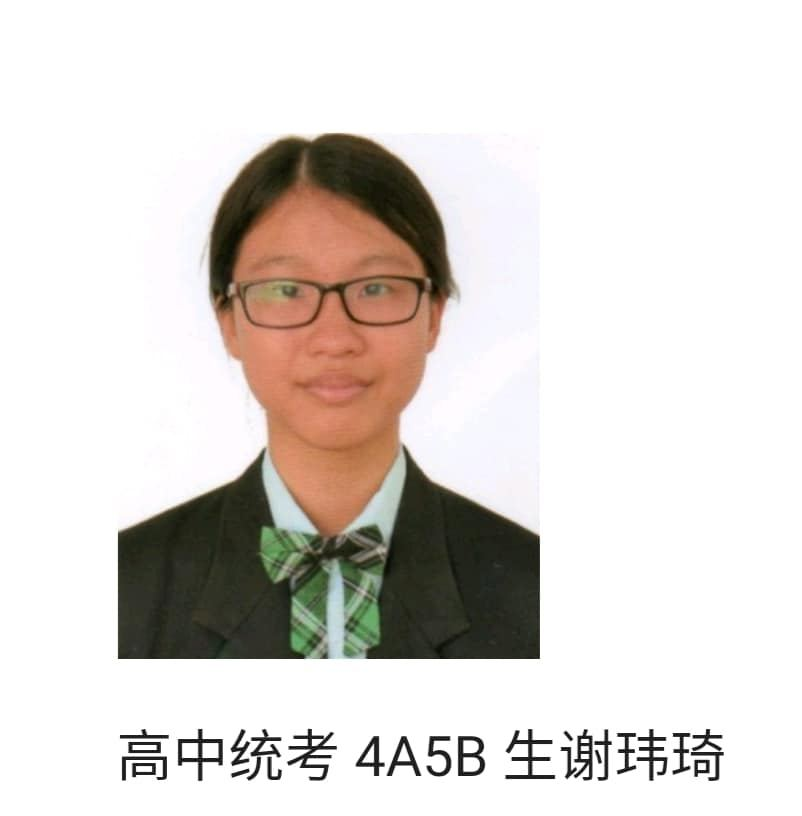
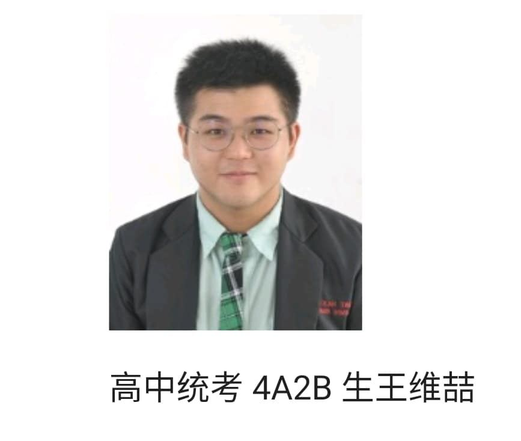
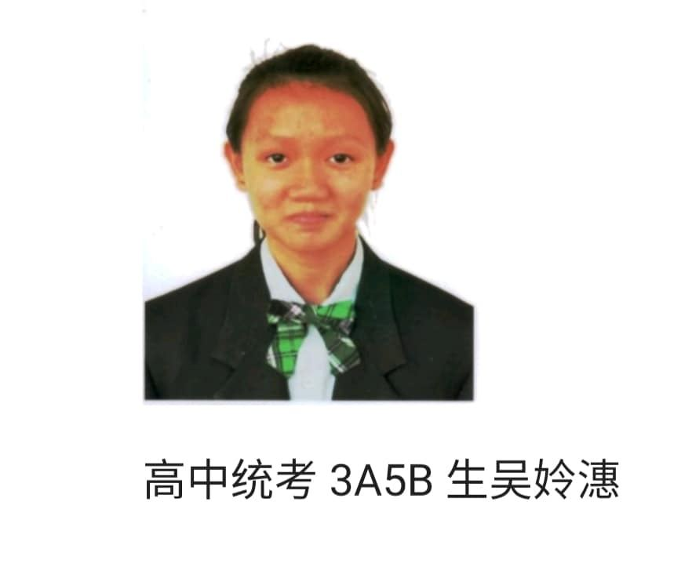
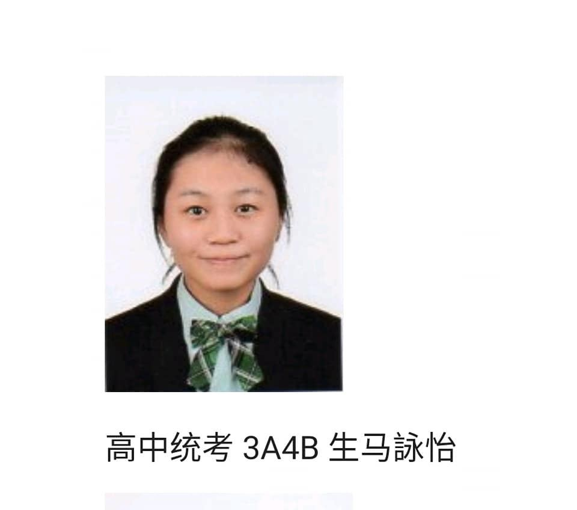
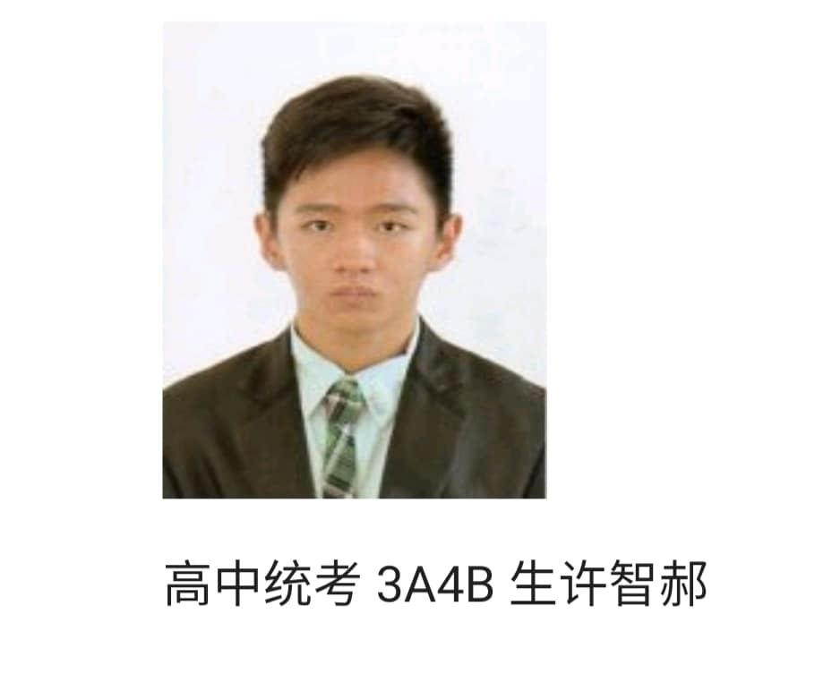

南华独立中学在第四十五届统考取得不俗的表现，突显"学会读书"的办学理念。初中统考
南华独立中学在第四十五届统考取得不俗的表现，突显"学会读书"的办学理念。初中统考的平均及格率为82.74%，比2018年的79.17%进步了3.57%，其中数学及美术的及格率达90%以上。高中统考的平均及格率为77.45%，比起2018年的65.92%进步了11.53%。高级数学I及美术的及格率达到100%，达90%以上的科目分别是华文及电脑与资讯工艺，80%以上的科目分别是马来西亚文、英文、高级数学II及商业学，其他科目及格率也比往年进步。
至于个人成绩，高中组余延峰及林修弘同学取得6A的亮眼成绩，王维喆及谢玮琦同学取得4A佳绩，蒋存益、吴姈潓、许智郝、马咏怡及林宏艺同学取得3A，其他同学亦获得不俗的成绩。初中组黄乙航和陈乐儿同学各考获3A佳绩，另外三名考获2A的同学，分别是阮健恺、方宥敬和颜彣全。






